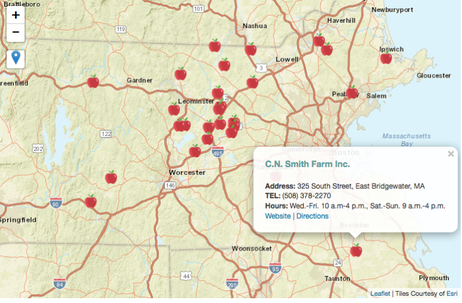

Where to pick apples in Massachusetts
A map, created by Leaflet.js, where you can locate where to pick apples in Massachusetts. The map showcases the name, address, telephone number,web information of each organic orchards and bogs in Massachusetts, and the user can find their location and find the directions to their nearest orchards.
Story: Organic orchards and bogs where you can have an all-natural autumn
Role: Digital Designer and Developer
Tools: HTML, CSS, Javascript (Leaflet.js)